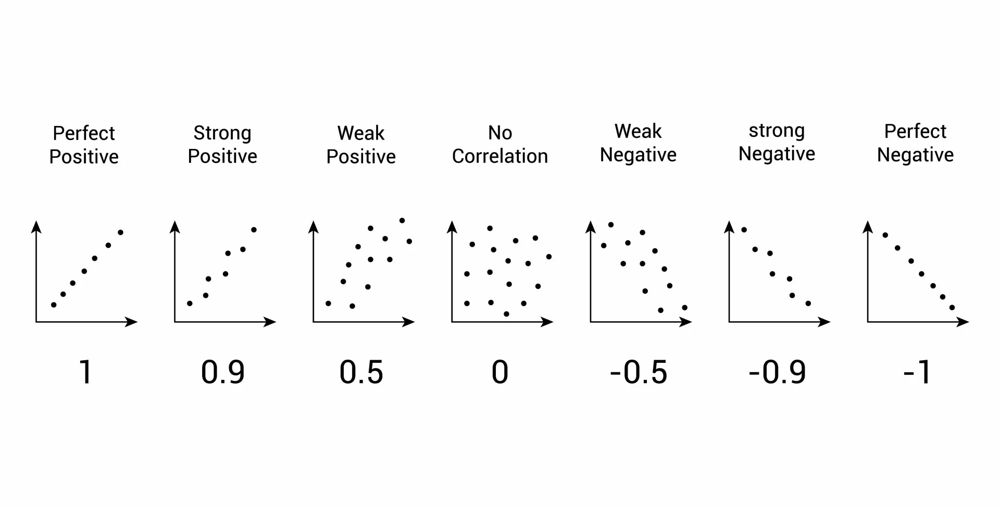

(or “Why Margarine Causes Divorce”)
Knowing how things are related can be incredibly useful.
For example: “Where there’s smoke, there’s fire”….
It might be difficult to spot a small orange flame (especially on a bright day), but it is very easy to find the associated smoke.
Clearly, it would be nice to have a way to identify when things are related. Thankfully, statistics provides us a tool for doing this!
That tool is called correlation.
What is Correlation?
Correlation is a measure of the DIRECTION and STRENGTH of the relationship between 2 variables. It summarizes the entire relationship into a single number (called r), which ranges from -1 to 1.
Because relationships between variables are often easier to understand visually, here are a few examples:

In short, the stronger the correlation is between two variables, the more it looks like a line. Stronger correlations are noted by values of r closer to 1 or -1. If the trend points upwards, the correlation is positive; if it points downwards (even slightly), then it’s negative.
Why Does Correlation Matter?
Checking for correlations is often a very good first step towards understanding a new dataset.
You may or may not know anything about cars. But, by correlating various performance specs across a set of cars in R, we can quickly explore what appears to make a car more or less fuel efficient (as measured by MPG):

(Statistically insignificant correlations are left blank)
In this case, we can quickly see that cars with higher horsepower, larger engine displacement, and higher weight tend to have lower fuel efficiency.
This information may not be news to most people, but it can help highlight the tradeoffs of each car design.
When Correlation Goes Wrong
Sadly, not all correlations are meaningful.
In some cases, 2 variables can APPEAR to be related, despite having nothing to do with each other. These correlations arise purely by chance, and are known as spurious correlations.
Here’s a great example:

Clearly, if we valued marriage, we should outlaw margarine immediately!
This example is courtesy of a very funny website dedicated showing how spurious correlations can pop up between nearly anything.
I always keep this site in my back pocket as a handy illustration of the First Rule of working with correlations: “CORRELATION DOES NOT EQUAL CAUSATION”
Correlation in Daily Life
One practical lesson of correlation that you can take away is:
If you can’t measure something directly, look for something strongly correlated to it
Much like knowing that smoke follows fire, we can use correlations between variables to “measure” things that may not be easily observable otherwise.
Anyone who has used an old-fashioned thermometer has experience working with correlations. Let me explain:
Measuring Temperature
Temperature is something we make use of every day. In fact, I’ll wager that one of the first things you do each morning is check the temperature outside.
But, temperature is also surprisingly tricky to measure (directly). Here is how it is defined:
“Temperature: The average kinetic energy of the vibrating and colliding atoms making up a substance”.
So, we have to somehow measure billions of vibrating molecules to know how hot something is? Yikes!
Mercury Correlates with …
At first glance, this problem looks impossible to solve. However, somewhere along the line people noticed that certain things consistently correlated with temperature.
- An obvious one: it certainly FEELS hotter/colder as temperature changes:

Unfortunately, everyone feels the temperature differently, so it’s not a particularly precise measure…
One person might say it feels like 65°F, while another says it feels like 73°F. A good first step, but we can do better.
- People also noticed that ice will melt past a certain temperature:

This approach is also pretty limited - it only tells us whether the temperature is above/below 32°F. Otherwise, it doesn’t really correlate with the temperature all that well.
Let’s keep looking…
- Eventually, someone figured out that liquids expand/contract as temperatures change:

This measure correlates extremely well to the temperature!
By putting a liquid in a small tube and watching how much it expands/contracts, it is possible to obtain precise & reliable measurements of temperature.
And that’s exactly what a mercury thermometer does.
Today’s digital thermometers are slightly more sophisticated, using changes in electrical resistivity to measure temperature. But the fact remains that thermometers still use very strongly correlated variables to (precisely) estimate the true temperature, rather than measuring it directly.
Summing Up
People are hard-wired to find patterns. In fact, it’s arguably why we’re at the top of the food chain. However, this drive to find patterns can sometimes lead us astray.
Importantly, if some is attempting to convince you that 2 things are related and ONLY refers to how strong the correlation is, you should be wary. As we saw, blindly believing a strong correlation can lead to some seriously weird conclusions.
Next week, we will apply our knowledge of how we can use relationships between variables to make predictions. Next stop: Linear Regression.
===========================
R code used to generate plots:
- Correlation Plot - Cars
library(corrplot)
cor_explore <- cor(mtcars)
cor_sig <- cor.mtest(mtcars, conf.level = 0.95)
corrplot(cor_explore, p.mat = cor_sig$p, method = 'ellipse', order = 'AOE', type = 'upper', insig='blank')
- Correlations with Temperature
library(data.table)
library(ggplot2)
set.seed(060124)
corr_example <- rnorm(100,50,20) |> as.data.table()
colnames(corr_example) <- "TEMPERATURE"
corr_example[,PERCEPTION := TEMPERATURE + rnorm(100, 0, 10)]
corr_example[,VOL_ICE := ifelse(TEMPERATURE < 32, 1, 0)]
corr_example[,VOL_MERCURY := (TEMPERATURE + rnorm(100, 32, .05))*.0335] # thermal expansion = 60.4 µm/(m·K), which converts to 0.0604 m/K ---> each °K = 1.8°F so, 0.0335 m/F
### Plot output
# Perception
ggplot(corr_example, aes(x=TEMPERATURE, y=PERCEPTION)) +
geom_point() +
ggtitle("Perception vs. Temperature") +
theme(plot.title = element_text(size=22)) +
geom_text(aes(x = 100, y = -2, label = "Summer of Stats"), col="grey80", size = 3)
# Ice
ggplot(corr_example, aes(x=TEMPERATURE, y=VOL_ICE)) +
geom_point() +
ggtitle("Ice Volume vs. Temperature") +
theme(plot.title = element_text(size=22)) +
coord_cartesian(ylim = c(-.50,1.5)) +
geom_text(aes(x = 100, y = -0.45, label = "Summer of Stats"), col="grey80", size = 3)
# Liquid
ggplot(corr_example, aes(x=TEMPERATURE, y=VOL_MERCURY)) +
geom_point() +
ggtitle("Liquid Volume vs. Temperature") +
theme(plot.title = element_text(size=22)) +
geom_text(aes(x = 100, y = 1.2, label = "Summer of Stats"), col="grey80", size = 3)